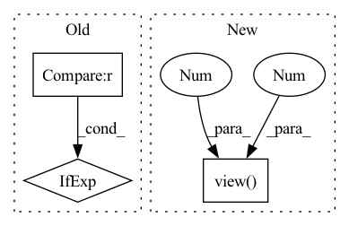

Pattern ID :4257
Before Change
self.num_classes = output_shape[-1] - self.reg_max * 4
self.names = {ii: str(ii) for ii in range(self.num_classes)}
self.dfl = DFL(self.reg_max) if self.reg_max > 1 else nn.Identity()
self.pre_val_input_shape, self.pre_val_feature_sizes, self.pre_val_feature_lens = None, None, None
def get_feature_sizes(self, input_shape):After Change
self.names = {ii: str(ii) for ii in range(self.num_classes)}
// self.dfl = DFL(self.reg_max) if self.reg_max > 1 else nn.Identity()
self.dfl = torch.arange(self.reg_max, device=self.device, dtype=torch.float32).view(1 , 1 , self.reg_max, 1)
self.pre_val_input_shape, self.pre_val_feature_sizes, self.pre_val_feature_lens = None, None, None
def get_feature_sizes(self, input_shape):
feature_sizes = [(math.ceil(input_shape[-2] / (2**ii)), math.ceil(input_shape[-1] / (2**ii))) for ii in range(3, 3 + self.num_pyramid_levels)]In pattern: SUPERPATTERN
Frequency: 3
Non-data size: 3
Instances Fragment ID: 15505548
Project Name: leondgarse/keras_cv_attention_models
Commit Name: 083d2927f2da27afe29c510ed46b89fd8f223df3
Time: 2023-04-15
Author: leondgarse@gmail.com
File Name: keras_cv_attention_models/yolov8/torch_wrapper.py
M Class Name: Detect
N Class Name: Detect
M Method Name: __init__(6)
N Method Name: __init__(6)
M Parent Class: nn.Module
N Parent Class: nn.Module
M File Name: keras_cv_attention_models/yolov8/torch_wrapper.py
N File Name: keras_cv_attention_models/yolov8/torch_wrapper.py
M Start Line: 51
M End Line: 51
N Start Line: 37
N End Line: 37
Before Change
for i, (s, p, o) in enumerate(test_spo):
row = scores[i] // corresponding predictions
idx = o if direction == "o" else s
true_score = row[idx]
// remove current label from scoresAfter Change
idx = 0 if direction == "s" else 2
targets = test_spo[:, idx].long()
arange = torch.arange(len(targets), dtype=torch.long, device="cpu")
true_scores = scores[arange, targets].view(-1 , 1 )
// remove the true subjects/objects from the scores so they don"t factor in rankings
scores = scores.clone()
scores[arange, targets] = float("-Inf") Fragment ID: 15505544
Project Name: tsafavi/codex
Commit Name: 3dddca246e4fb616cef251bafb32dac648e8eedb
Time: 2020-07-08
Author: tsafavi@umich.edu
File Name: scripts/baseline.py
M Class Name: AnonimousClass
N Class Name: AnonimousClass
M Method Name: evaluate_rankings(5)
N Method Name: evaluate_rankings(5)
M Parent Class:
N Parent Class:
M File Name: scripts/baseline.py
N File Name: scripts/baseline.py
M Start Line: 129
M End Line: 151
N Start Line: 129
N End Line: 148
Before Change
alpha_sum = alpha.sum(1)
// make sure the output lengths are valid
min_sum = 0 if min_output_length is None else (min_output_length * beta)
max_sum = 1e8 if max_output_length is None else (max_output_length * beta)
desired_sum = alpha_sum.clip(min=min_sum, max=max_sum) + eps
alpha = alpha * (desired_sum / alpha_sum).unsqueeze(1)
alpha_sum = desired_sumAfter Change
torch.ones_like(output)
.scatter(
1,
feat_lengths.view( B, 1 , 1 ) .expand(-1, -1, C),
beta / tail_weights.view(B, 1, 1).expand(-1, -1, C),
)
) Fragment ID: 15505545
Project Name: george0828zhang/torch_cif
Commit Name: 68e2689c475308cd5043cf1d25c49891b23e946a
Time: 2022-02-23
Author: cc.chang0828@gmail.com
File Name: cif.py
M Class Name: AnonimousClass
N Class Name: AnonimousClass
M Method Name: cif_function(7)
N Method Name: cif_function(9)
M Parent Class:
N Parent Class:
M File Name: cif.py
N File Name: cif.py
M Start Line: 29
M End Line: 216
N Start Line: 27
N End Line: 197